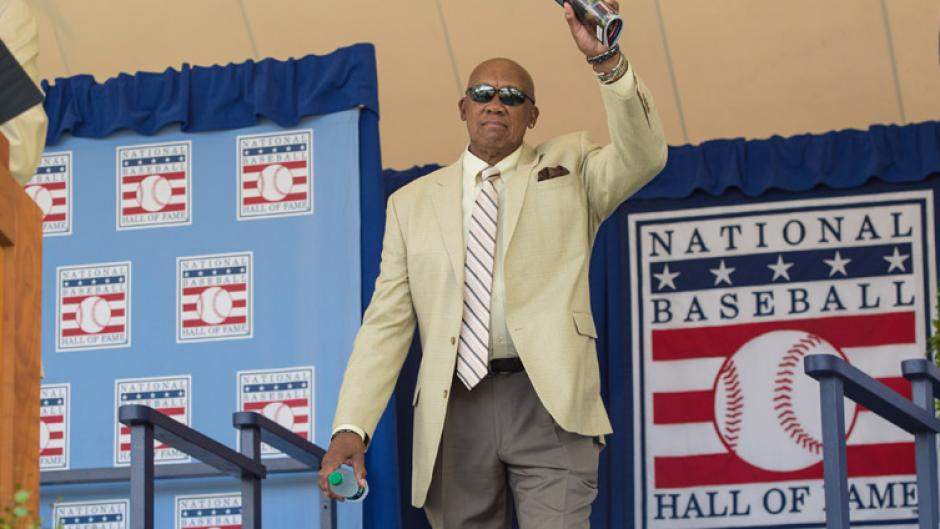
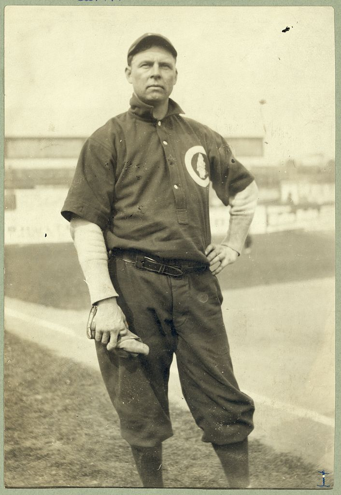
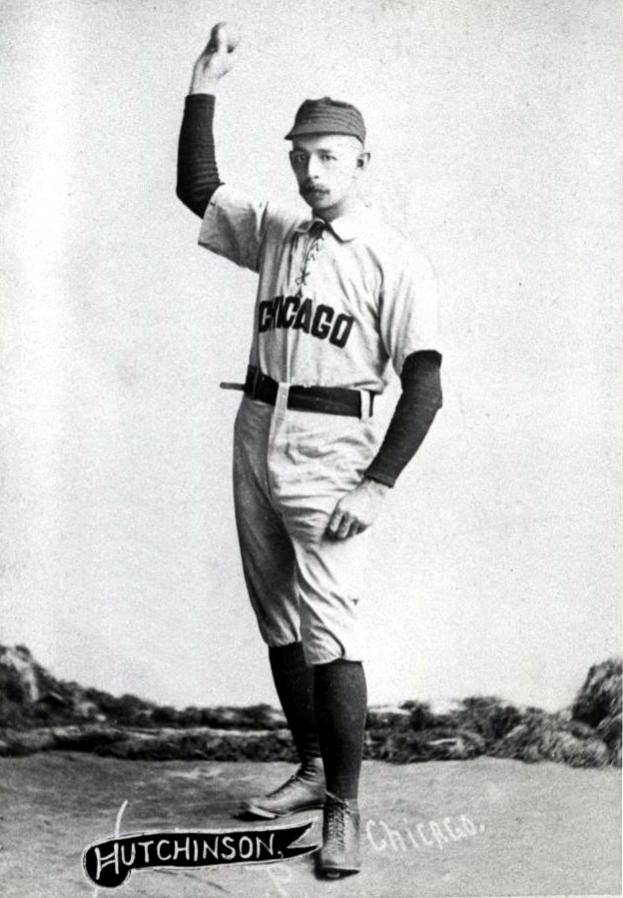

Chicago Cubs Franchise Records
This Record is held by the all powerful Sammy Sosa, and he has hit a impressive 545 home runs as a Chicago Cub! 
This record is held by legend Fergie Jenkins, where he aquired a impressive 2,038 strikeouts as a Chicago Cub! 
This record is held by Cap Anson (last game was 1897), where he was able to earn an astonishing 1,722 run scored! 
This Record is held by Charlie Root, and was able to rack up 201 wins as a Chicago Cub! 
This Record is held by Frank Chance, and was able to gain 402 stolen bases as a Chicago Cub! 
This Record is held by the legend Ernie Banks, he played a massive total of 2,528 games as a Chicago Cub! 
This Record is held by, yet againCharlie Root, and was able to play a total of 605 games as a Chicago Cub!
This Record is held by, yet agian Cap Anson, and was able to gain a massive total of 3,012 hits as a Chicago Cub!
This Record is held by the miraculous “Three Finger” Mordecai Brown, he threw 48 shutouts as a Chicago Cub! 
This Record is held by Bill Hutchison, and he was able to throw a total of 317 complete games as a Chicago Cub! 